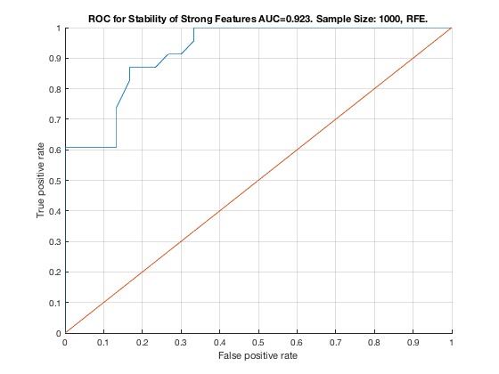

TieNet. Sample Size: 1000. RFE.
unit_stability_type(1000, 2, "TieNet")
Table 20. Stability by Type. Sample Size: 1000, RFE.
_____________________________________________________
SELECTED COUNTS: Strong:=23, Weak=26, Irrelevant=4
TOTAL COUNTS: Strong:=23, Weak=26, Irrelevant=4
Feature_Number Stability Type Path_Length N_MBS Equivalence
______________ _________ ____________ ___________ _____ ___________
22 ' 0.574 ' ' STRONG ' 2 0 21
23 ' 0.568 ' ' STRONG ' 3 0 21
21 ' 0.566 ' ' STRONG ' 1 0 21
14 ' 0.226 ' ' STRONG ' 3 0 12
16 ' 0.222 ' ' STRONG ' 2 0 12
17 ' 0.222 ' ' STRONG ' 4 0 12
12 ' 0.220 ' ' STRONG ' 1 0 12
11 ' 0.216 ' ' STRONG ' 4 0 7
13 ' 0.216 ' ' STRONG ' 2 0 12
8 ' 0.210 ' ' STRONG ' 2 0 7
15 ' 0.210 ' ' STRONG ' 3 0 12
7 ' 0.208 ' ' STRONG ' 1 0 7
9 ' 0.208 ' ' STRONG ' 3 0 7
10 ' 0.208 ' ' STRONG ' 4 0 7
41 ' 0.196 ' ' weak ' 3 0 41
40 ' 0.190 ' ' weak ' 3 0 40
28 ' 0.174 ' ' weak ' 5 0 28
39 ' 0.164 ' ' weak ' 4 0 39
1 ' 0.162 ' ' STRONG ' 1 0 1
4 ' 0.162 ' ' STRONG ' 4 0 1
3 ' 0.160 ' ' STRONG ' 4 0 1
5 ' 0.148 ' ' STRONG ' 3 0 1
6 ' 0.148 ' ' STRONG ' 3 0 1
35 ' 0.148 ' ' weak ' 7 0 35
2 ' 0.140 ' ' STRONG ' 2 0 1
50 ' 0.132 ' ' weak ' 5 0 50
46 ' 0.130 ' ' weak ' 7 0 46
19 ' 0.124 ' ' STRONG ' 2 540 18
51 ' 0.124 ' ' weak ' 4 540 51
48 ' 0.122 ' ' weak ' 6 540 48
18 ' 0.116 ' ' STRONG ' 1 1080 18
33 ' 0.116 ' ' weak ' 8 1080 33
20 ' 0.114 ' ' STRONG ' 3 1620 18
30 ' 0.112 ' ' weak ' 10 1620 30
32 ' 0.112 ' ' weak ' 8 1620 32
44 ' 0.112 ' 'irrelevant' Inf 1620 44
49 ' 0.112 ' ' weak ' 6 1620 49
37 ' 0.108 ' ' weak ' 6 1620 37
53 ' 0.106 ' ' weak ' 5 1620 53
47 ' 0.104 ' 'irrelevant' Inf 1620 47
45 ' 0.102 ' ' weak ' 7 1620 45
38 ' 0.100 ' ' weak ' 5 1620 38
24 ' 0.096 ' ' weak ' 4 1620 24
31 ' 0.092 ' ' weak ' 9 1620 31
34 ' 0.092 ' ' weak ' 8 1620 34
43 ' 0.090 ' 'irrelevant' Inf 1620 43
25 ' 0.088 ' ' weak ' 6 1620 25
27 ' 0.088 ' ' weak ' 6 1620 27
29 ' 0.088 ' ' weak ' 11 1620 29
52 ' 0.084 ' ' weak ' 4 1620 52
26 ' 0.082 ' ' weak ' 5 1620 26
42 ' 0.078 ' 'irrelevant' Inf 1620 42
36 ' 0.076 ' ' weak ' 8 1620 36
Figure 20. ROC for Stability of Strong Features AUC=0.923. Sample Size: 1000, RFE.
___________________________________________________________________________________
